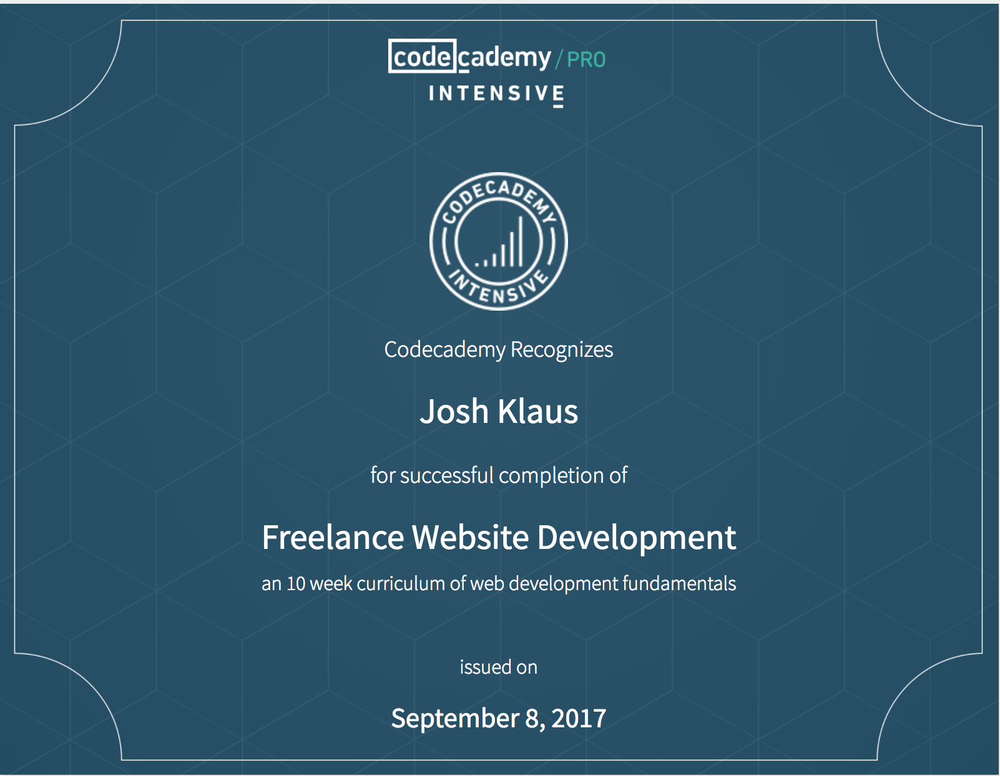

Degrees and Certificates
Geography and Biology
Programming - Java
Website Development
Cartography
Machine Learning
Geospatial Web

Geospatial Analyst/Programmer
joshklaus333@gmail.com
I began my career in Geospatial Analysis working at the National Geophysical Data Center at NOAA while studying at the University of Colorado at Boulder. I received degrees in Geography and Biology from CU. In 2013 I became aware of the need to build up my technical skills. After years working in GIS I decided to bolster my skillset by taking courses at City College of San Francisco. After completing all the requirements I received a certificate in programming in Java. I continued on to enhance my Website Application Programming skills. I have worked in various capacities from Federal agencies to large Tech companies.
I have a passion for the outdoors primarily mountain biking and hiking. I have hiked 14ers, crossed the continental divide countless times, and mountain biked in Moab and countless trails throughout CA and CO. I have a passion for adventure and travel. Within the last two years I have traveled to London, Paris, Rome and Oahu.